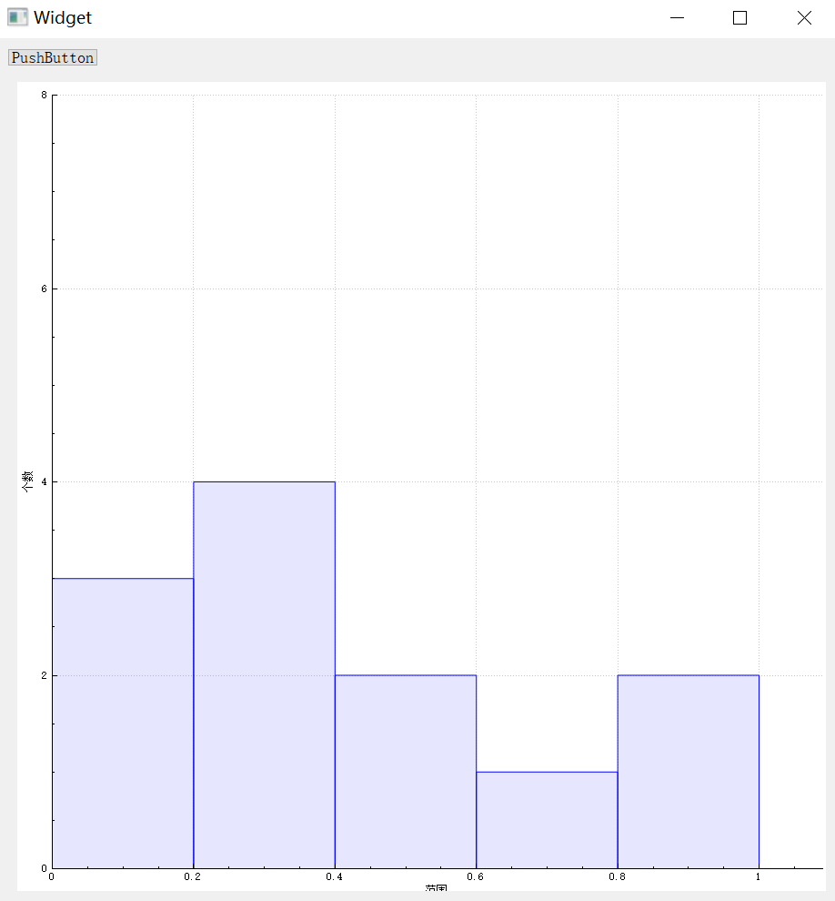

1.安装CustomPlot
1.1 下载
官网：https://www.qcustomplot.com/index.php/download
1.2 解压
2.配置与使用
2.1 配置
直接下载后，将其中的qcstomplot.h和qcustomplot.cpp当作项目文件添加即可

2.2 使用
方式一
界面，可以通过将widget提升为QCustomPlot，然后进入代码中设置CustomPlot的属性
1
| #include "qcustomplot.h"
|
1
2
3
4
5
6
7
8
9
10
11
12
13
14
15
16
17
| QVector<double> x(101), y(101);
for (int i=0; i<101; ++i)
{
x[i] = i/50.0 - 1;
y[i] = x[i]*x[i];
}
ui->customPlot->addGraph();
ui->customPlot->setMinimumSize(500,500);
ui->customPlot->graph(0)->setData(x, y);
ui->customPlot->xAxis->setLabel("x");
ui->customPlot->yAxis->setLabel("y");
ui->customPlot->xAxis->setRange(-1, 1);
ui->customPlot->yAxis->setRange(0, 1);
ui->customPlot->replot();
|
方式二
代码创建使用
1
| #include "qcustomplot.h"
|
1
2
3
4
5
6
7
8
9
10
11
12
13
14
15
| QCustomPlot *customplot = new QCustomPlot(this);
customplot->setMinimumSize(500,500);
QVector<double> x(101), y(101);
for (int i=0; i<101; ++i)
{
x[i] = i/50.0 - 1;
y[i] = x[i]*x[i];
}
customplot->addGraph();
customplot->graph(0)->setData(x, y);
customplot->xAxis->setLabel("x");
customplot->yAxis->setLabel("y");
customplot->xAxis->setRange(-1, 1);
customplot->yAxis->setRange(0, 1);
|
2.3 绘画直方图
1
2
3
4
5
6
7
8
9
10
11
12
13
14
15
16
17
18
19
20
21
22
23
24
25
26
27
28
29
30
31
32
33
34
35
36
37
38
39
40
41
42
43
44
45
46
47
48
49
50
51
52
53
54
55
56
57
58
59
60
61
62
63
64
65
66
67
68
69
70
71
72
73
74
75
76
77
78
79
80
81
82
83
84
85
86
87
88
89
90
| #include "widget.h"
#include "ui_widget.h"
#include "qcustomplot.h"
#include "QDebug"
Widget::Widget(QWidget *parent) :
QWidget(parent),
ui(new Ui::Widget)
{
ui->setupUi(this);
ui->customPlot->setVisible(false);
}
Widget::~Widget()
{
delete ui;
}
void Widget::on_pushButton_clicked()
{
int sum[5]={0};
QVector<double> Raw_data;
Raw_data.append(0.12);
Raw_data.append(0.11);
Raw_data.append(0.13);
Raw_data.append(0.21);
Raw_data.append(0.27);
Raw_data.append(0.33);
Raw_data.append(0.31);
Raw_data.append(0.53);
Raw_data.append(0.42);
Raw_data.append(0.67);
Raw_data.append(0.88);
Raw_data.append(0.85);
Raw_data.append(1.20);
qSort(Raw_data.begin(),Raw_data.end());
qDebug()<<Raw_data;
int k = 0;
int m = 0;
QVector<double> ticks;
for(double i = 0;i <= 1;i += 0.2)
{
ticks.append(i+0.1);
for(int j = m;j <Raw_data.size();j++)
{
if((Raw_data[j] >= i) && (Raw_data[j]< i+0.2))
{
sum[k]++;
}
else
{
m = j;
break;
}
}
k++;
}
ticks.append(1);
for(int i = 0; i < sizeof(sum)/sizeof(sum[0]); i++){
qDebug() << sum[i];
}
ui->customPlot->setMinimumSize(900,900);
ui->customPlot->xAxis->setRange(0, 1.09);
ui->customPlot->yAxis->setRange(0, 8);
ui->customPlot->xAxis->setLabel(QString::fromLocal8Bit("范围"));
ui->customPlot->yAxis->setLabel(QString::fromLocal8Bit("个数"));
QCPBars *newBars =new QCPBars (ui->customPlot->xAxis, ui->customPlot->yAxis);
newBars-> setName ( "像素值统计" );
newBars->setWidth(0.2);
QVector<double> labels;
for(int i = 0;i < sizeof(sum)/sizeof(int);i++)
{
labels<<sum[i];
}
newBars-> setData (ticks, labels);
ui->customPlot->replot();
ui->customPlot->setVisible(true);
}
|

1
2
| ui->customPlot->xAxis->grid()->setVisible(false);
ui->customPlot->yAxis->grid()->setVisible(false);
|